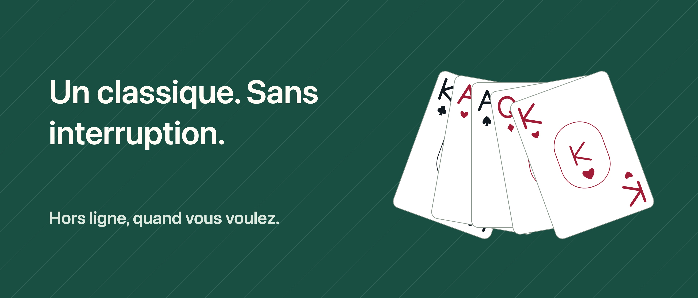

Solitaire Unbound

Un moment pour vous, une carte à la fois.
Un moment avec les cartes, sans interruption. Jouez au Klondike avec une pioche de 1 ou 3 cartes, sans publicité, compte IFG ni abonnement.
ANNULEZ ET RÉESSAYEZ Annuler, rétablir et obtenir un indice de coup légal sont gratuits. Faites glisser les cartes ou touchez une carte puis sa destination. Choisissez Relax pour masquer le temps ou Classique pour afficher le temps et les coups.
UNE PARTIE À RETROUVER Les sauvegardes et statistiques restent sur votre appareil. Choisissez une donne aléatoire ou une disposition initiale avec une solution vérifiée, puis revenez pour le défi du jour. Une donne aléatoire n’est pas toujours gagnable ; vos choix peuvent aussi bloquer une donne vérifiée.
PLUS DE VARIANTES AVEC PRO Un seul achat ajoute FreeCell, Spider à 1, 2 et 4 couleurs, l’archive des défis et davantage de personnalisation : six tables, six dos et trois styles de cartes au total. Aucun indice à acheter ou à épuiser.
Le jeu fonctionne hors ligne. Acheter ou restaurer Pro peut nécessiter internet et un compte Apple. La progression n’est pas synchronisée entre appareils et peut être supprimée lors de la désinstallation. Restaurer Pro ne récupère pas la progression effacée.